It’s the job that’s never started as takes longest to finish.
J.R.R. Tolkien
laatste project
Monitor Talent naar de Top 2025
Ik laat hier een kort fragment zien; de volledige interactieve publicatie staat op haar eigen plek.
Monitorfragment wordt geladen...
Verder lezen
monitortalent.nlMijn werk
Vraagstukken van sociale gelijkheid en rechtvaardigheid vormen een rode draad in mijn werk. Voorbeelden van publicaties vindt u hier:
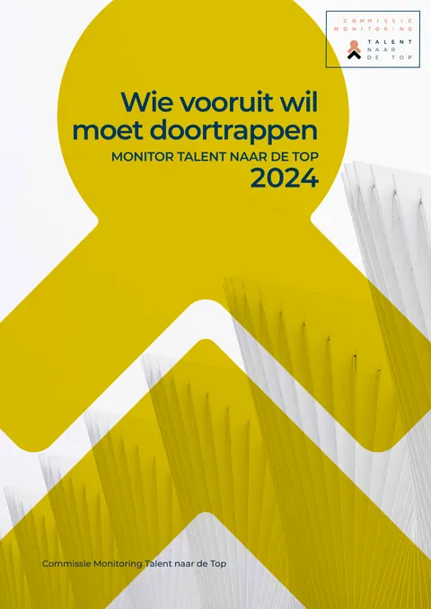
Wie vooruit wil moet doortrappen, Monitor Talent naar de Top 2024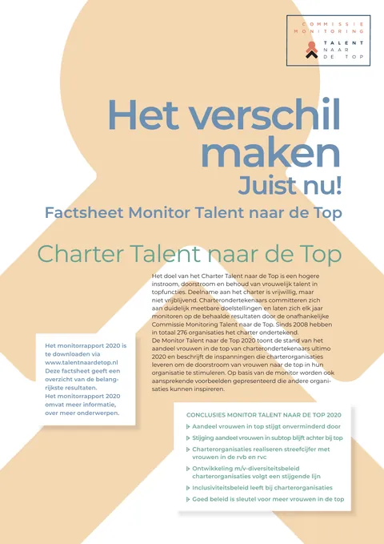
Het verschil maken. Juist nu Factsheet Monitor Talent naar de Top 2020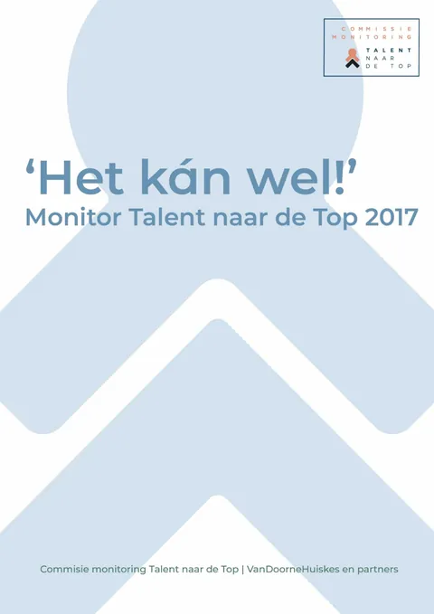
Het kan wel! Monitor Talent naar de Top 2017 Scherven Brengen Geluk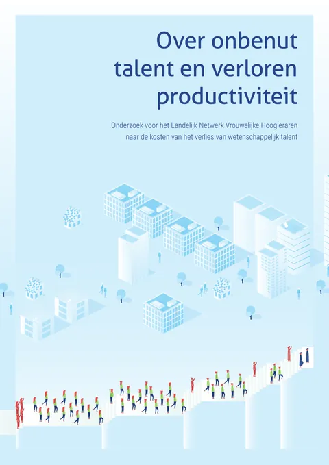
Over onbenut talent en verloren productiviteit, Monitor LNVH 2017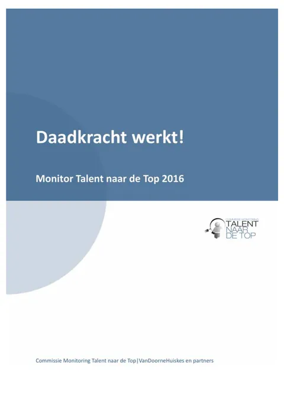
Daadkracht werkt!, Monitor Talent naar de top 2016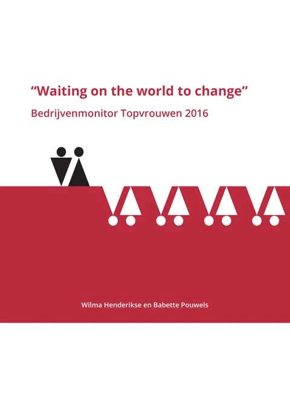
Waiting on the World to change”, Bedrijvenmonitor 2016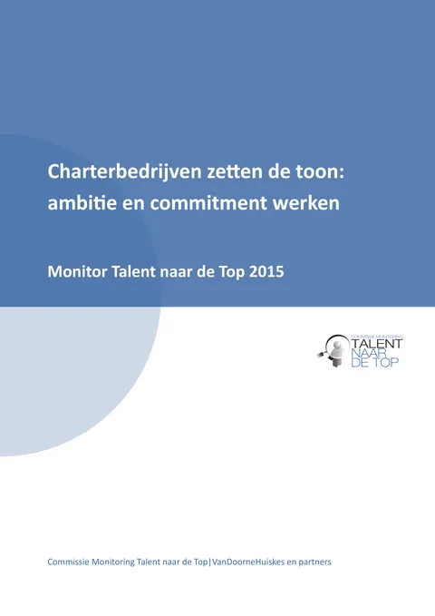
Charterbedrijven zetten de toon ambitie en commitment werken! Monitor Talent naar de top 2015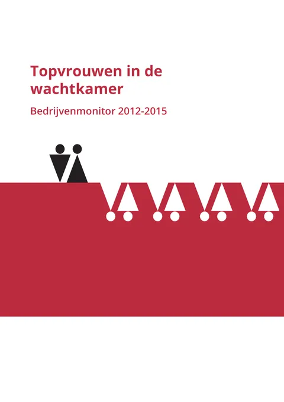
Topvrouwen in de wachtkamer Bedrijvenmonitor 2012-2015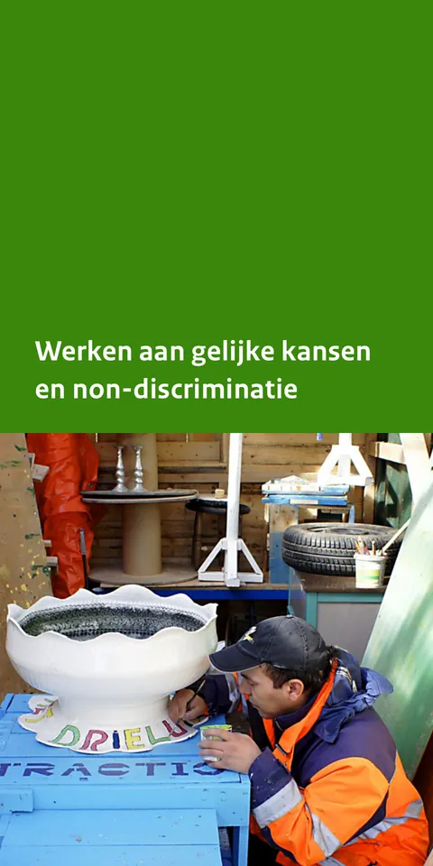
Werken aan gelijke kansen en non-discriminatie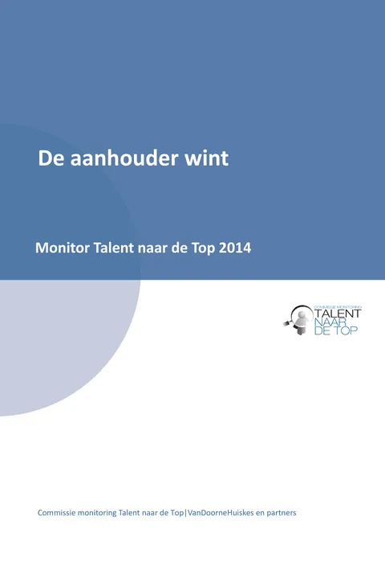
De aanhouder wint, Monitor Talent naar de top 2014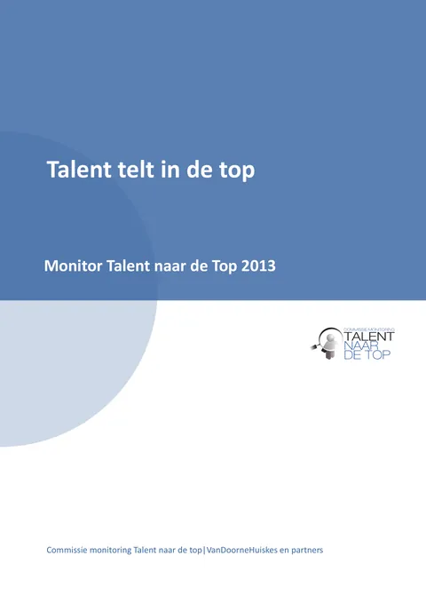
Talent telt in de top, Monitor Talent naar de top 2013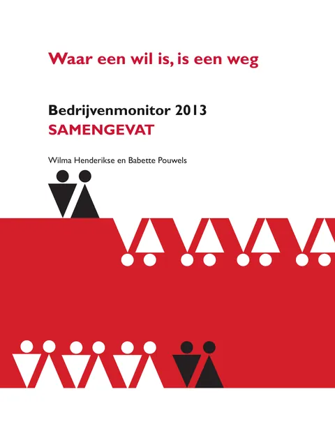
Waar een wil is, is een weg, Bedrijvenmonitor 2013 Diversiteit en kwaliteit verbinden_VDH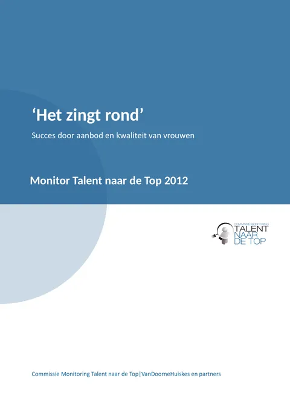
Het zingt rond, Succes door aanbod en kwaliteit van vrouwen, Monitor Talent naar de top 2012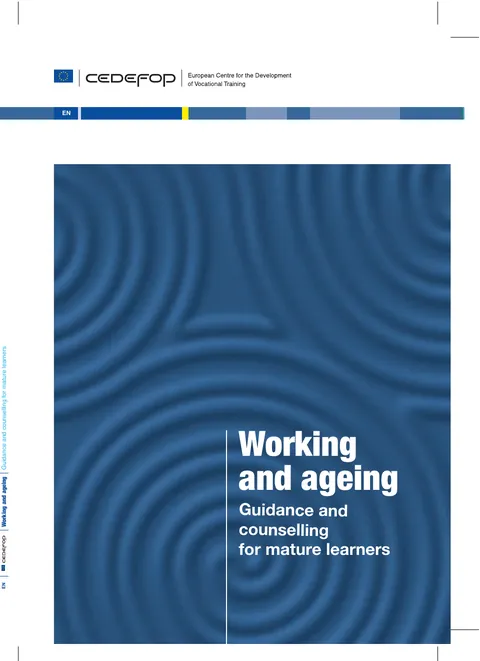
Working and ageing, Do European employers support longer working lives Cedefop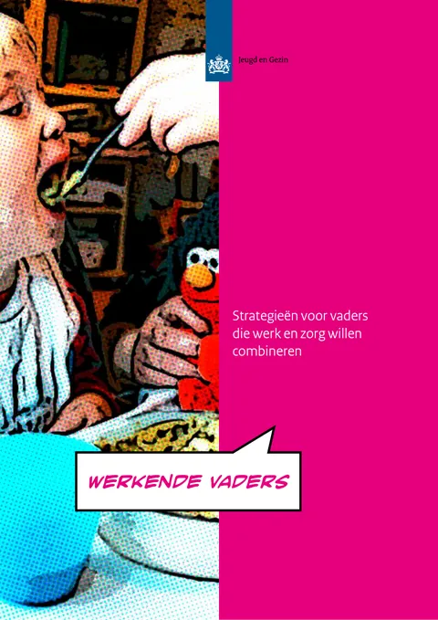
Werkende vaders, strategieën voor vaders die werk en zorg willen combineren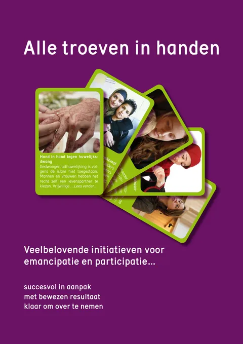
Alle troeven in handen, veelbelovende initiatieven voor emancipatie en participatie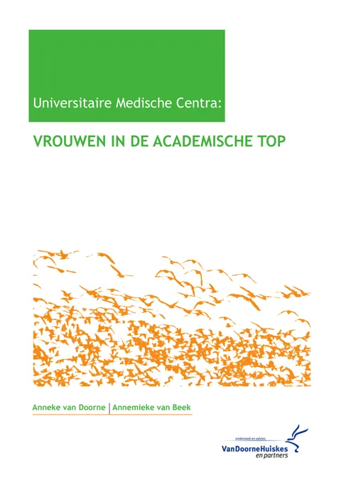
Artikel vrouwen in de academische top UMC´s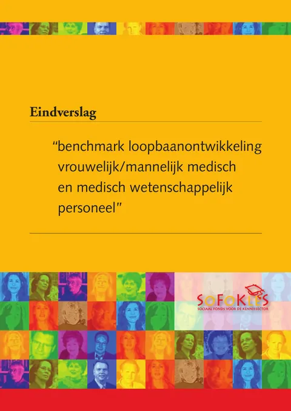
Benchmark loopbaanontwikkeling vrouwelijk-mannelijk medisch en medisch wetenschappelijk personeel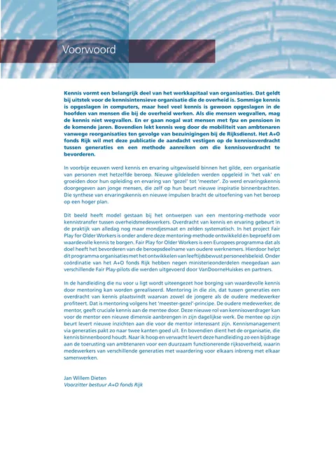
werkboek Mentoring Meester gezel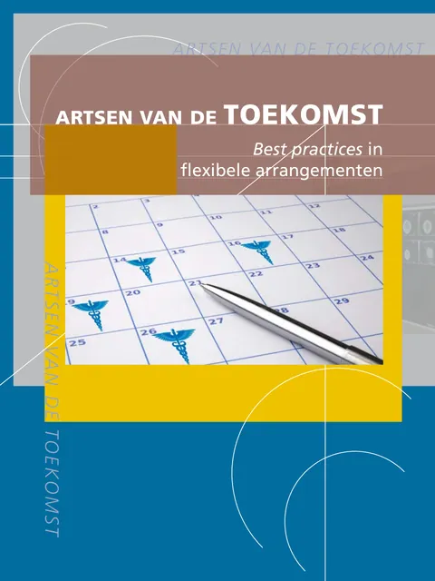
Artsen van de toekomst, best practices in flexibele arrangementen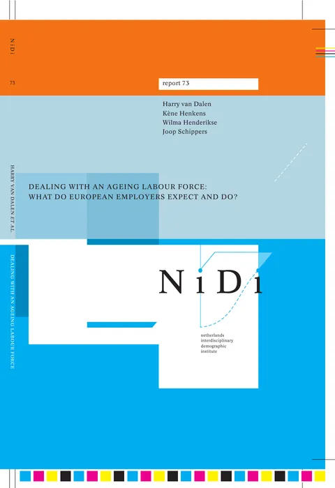
Dealing with an ageing labour force what do European employers expect and do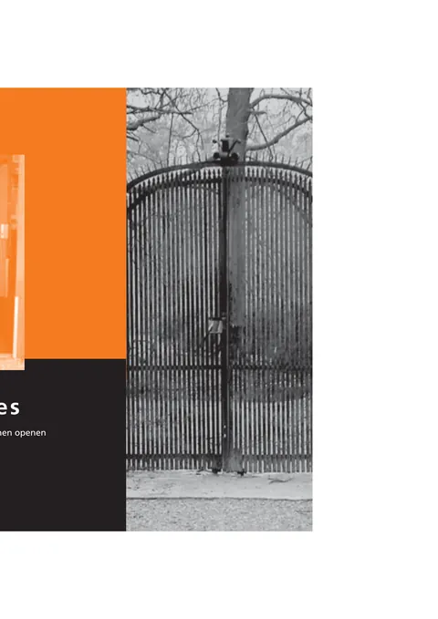
Sleutels tot succes, hoe organisaties de deur naar de top voor vrouwen kunnen openen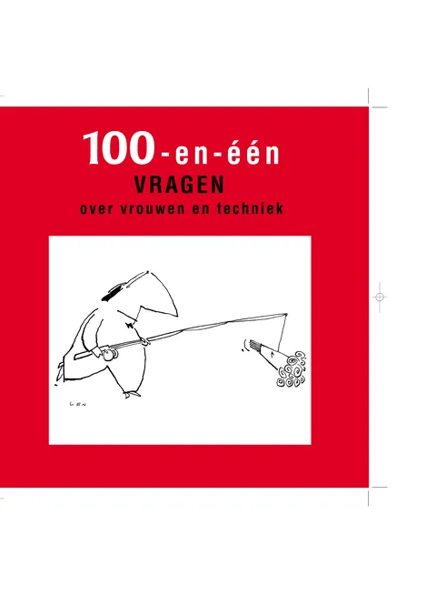
101 vragen over vrouwen en techniekOver Wilma
Begon haar loopbaan als wetenschappelijk onderzoeker en hoofd Wetenschapswinkel bij de Erasmus universiteit, om zich vervolgens te specialiseren in marketing en communicatie. Richtte op Curaçao marketingbureau Insight op en stapte in 1993 over naar VanDoorneHuiskes als partner. Vraagstukken van sociale ongelijkheid, gender en diversiteit houden haar al een leven lang bezig. Zij schreef veel publicaties hierover en participeerde in diverse internationale commissies en projecten.
Bestuurlijk actief in sport, onderwijs en hulpverlening, en als vrijwilliger op diverse fronten. Ze werkt met heel veel plezier mee aan natuur- en milieuactiviteiten.
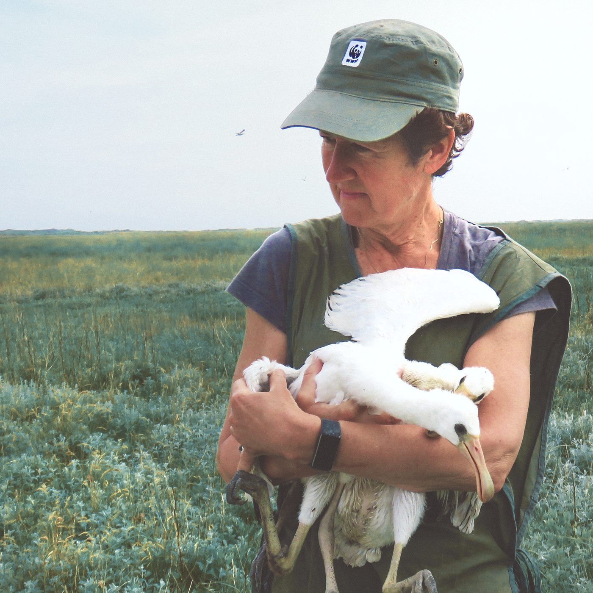
Vragen?
Hier kunt u mij bereiken